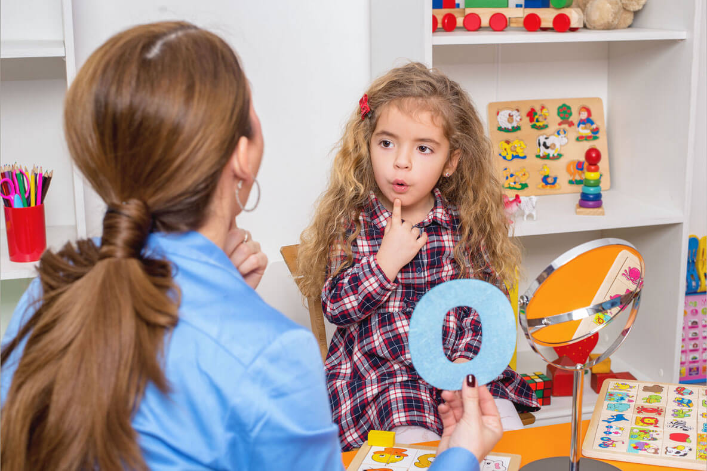

@fonoatucasa Fonoaudiología a domicilio a tu alcance.
Mejorando la comunicación y calidad de vida.
Agenda tu cita
Mejorando la comunicación y calidad de vida.
Agenda tu citaProfesional capacitada para realizar evaluación, diagnóstico, tratamiento e intervención fonoaudiológica en usuarios con disfunciones del habla, deglutorias, auditivas, cognitivas, lingüísticas, vocales y en el ámbito de motricidad orofacial para todas las edades, y en servicio de otoscopía y lavado de oídos.
El enfoque personalizado y profesional permite a los pacientes obtener avances significativos y brindar posibilidades terapéuticas que beneficien su calidad de vida.
Agenda el servicio de fonoaudiología que necesitas en simples pasos
Ideal para quienes prefieren evitar desplazamientos o viven en áreas remotas. Accede a evaluación fonoaudiológica desde cualquier dispositivo con internet.
Servicio en entorno familiar, lo que facilita la participación de los padres y crea un ambiente seguro y cómodo.
Atención personalizada y adaptada a sus necesidades, permitiendo a los pacientes recibir el cuidado necesario sin salir de su hogar.
Se examina el conducto auditivo para detectar obstrucciones o acumulaciones de cerumen y, si es necesario, se realiza un lavado de oídos profesional.